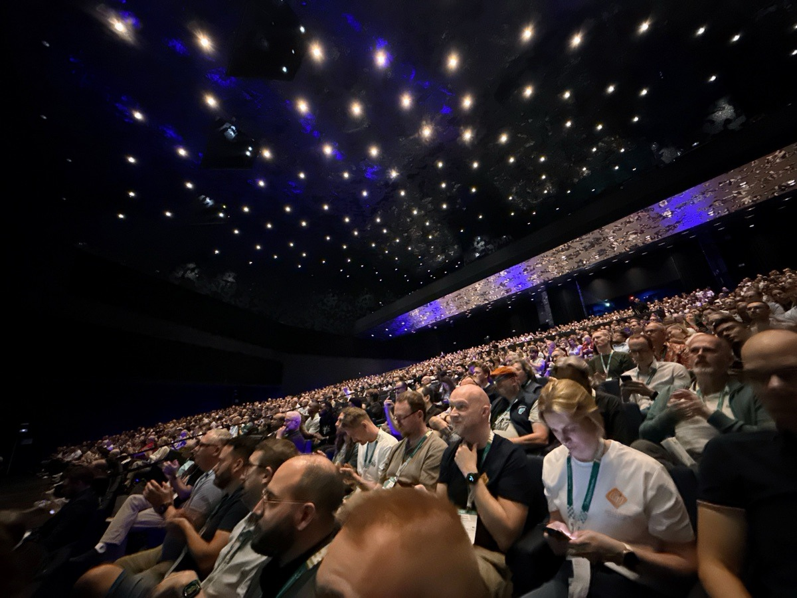
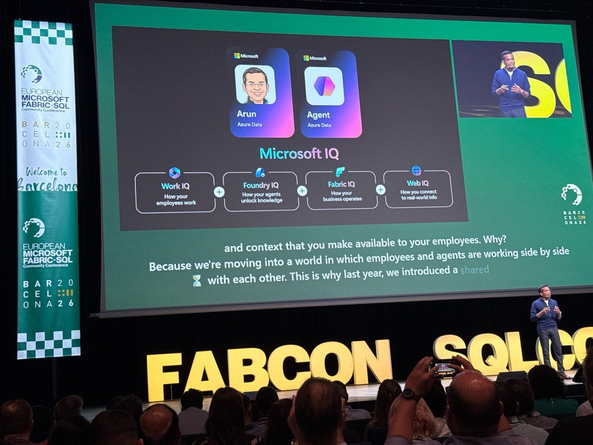

FabCon Barcelona 2026:
co było, co dojechało,
czego jeszcze nie ma

Prosto z keynote. Do czterech z tych tematów wrócimy dziś na osobnych slajdach.





Agent operacyjny tylko czyta dane z Monitor hub. Agentów baz danych jeszcze nie ma.
Agent analizuje przyczynę nieudanego uruchomienia pipeline'u prosto z Monitor hub.
Działa tylko do odczytu, w imieniu zalogowanego użytkownika. Wymaga roli Contributor i włączonego workspace monitoring.
Dla SQL i PostgreSQL, w Database Hub i w VS Code. Zapowiedziane na keynote, jeszcze niedostępne.
Sam Database Hub też jest w preview.
Polityki (tylko allow), catalog Govern i observability: trzy ekrany administratora.
Zakres: tenant albo capacity. Działa tylko lista dozwolonych: jedynym efektem jest Allow, a Deny nie istnieje. Warunki: workspace, grupy, etykiety wrażliwości, domena odbiorcy, typ elementu.
Jeden ekran dla admina: pokrycie etykietami, wyniki DLP, ustawienia tenantu, zalecane działania.
Dane odświeżają się raz dziennie. Widok nie obejmuje tabel wewnątrz elementów.

Nowy Monitor hub: historia przebiegów i odsetek udanych uruchomień każdego joba. Do tego workspace monitoring w eventhouse i alerty Activator.
Cztery ustawienia tenantu do sprawdzenia, każde z kodem QR do Learn.
- 1
Microsoft 365 admin center, ustawienia Copilot, „Fabric data in Microsoft Copilot”. Sprawdźmy, kto ma dostęp.
- 2
Sprawdźmy ustawienie AI na modelach semantycznych z danymi HR i finansowymi. Nie przechodzi ono na modele łańcuchowe.
- 3
Sprawdźmy ustawienia tenantu, które pozwalają AI przetwarzać dane poza regionem i poza obszarem geograficznym capacity.
- 4
Włączmy outbound access protection na workspace'ach z danymi wrażliwymi.
![Kod QR: https://learn.microsoft.com/microsoft-365/copilot/copilot-powerbi-copilot-chat](data:image/svg+xml;charset=utf-8,%3Csvg%20xmlns%3D%27http%3A%2F%2Fwww.w3.org%2F2000%2Fsvg%27%20width%3D%27164%27%20height%3D%27164%27%20class%3D%27segno%27%3E%3Cg%20transform%3D%27scale%284%29%27%3E%3Cpath%20fill%3D%27%23fff%27%20d%3D%27M0%200h41v41h-41z%27%2F%3E%3Cpath%20class%3D%27qrline%27%20stroke%3D%27%2307101e%27%20d%3D%27M2%202.5h7m2%200h1m1%200h1m5%200h2m2%200h2m7%200h7m-37%201h1m5%200h1m1%200h1m5%200h5m2%200h1m6%200h1m1%200h1m5%200h1m-37%201h1m1%200h3m1%200h1m1%200h1m1%200h2m9%200h4m1%200h3m1%200h1m1%200h3m1%200h1m-37%201h1m1%200h3m1%200h1m1%200h1m2%200h1m3%200h3m1%200h1m1%200h1m2%200h2m1%200h2m1%200h1m1%200h3m1%200h1m-37%201h1m1%200h3m1%200h1m3%200h1m1%200h1m5%200h3m2%200h1m4%200h1m1%200h1m1%200h3m1%200h1m-37%201h1m5%200h1m3%200h2m2%200h1m1%200h1m1%200h1m1%200h3m1%200h1m3%200h1m1%200h1m5%200h1m-37%201h7m1%200h1m1%200h1m1%200h1m1%200h1m1%200h1m1%200h1m1%200h1m1%200h1m1%200h1m1%200h1m1%200h1m1%200h7m-29%201h4m3%200h2m2%200h2m1%200h2m4%200h1m-29%201h1m5%200h1m1%200h1m1%200h1m1%200h1m1%200h2m1%200h1m1%200h1m2%200h5m2%200h2m2%200h3m-34%201h3m3%200h1m2%200h4m2%200h1m1%200h1m1%200h1m1%200h1m2%200h3m2%200h2m1%200h2m-36%201h3m1%200h3m5%200h1m4%200h1m2%200h1m1%200h1m2%200h1m1%200h1m1%200h1m1%200h3m1%200h2m-37%201h1m2%200h3m1%200h4m2%200h1m1%200h2m2%200h1m2%200h1m3%200h1m1%200h1m1%200h1m2%200h1m2%200h1m-36%201h3m2%200h2m3%200h1m2%200h1m1%200h1m2%200h2m3%200h1m2%200h2m1%200h2m1%200h1m2%200h1m-36%201h1m1%200h1m1%200h1m6%200h2m1%200h1m2%200h3m2%200h6m2%200h1m1%200h1m1%200h1m-36%201h4m2%200h2m1%200h1m1%200h3m1%200h2m4%200h1m2%200h4m1%200h1m1%200h3m1%200h2m-37%201h4m1%200h1m3%200h3m6%200h3m1%200h1m4%200h1m1%200h1m1%200h1m1%200h3m-36%201h2m1%200h5m1%200h3m1%200h1m1%200h2m1%200h1m3%200h1m1%200h3m1%200h3m1%200h1m1%200h2m-36%201h1m4%200h1m1%200h2m1%200h2m1%200h1m4%200h4m1%200h2m1%200h4m1%200h1m2%200h2m-36%201h1m1%200h6m3%200h5m3%200h1m1%200h1m1%200h1m2%200h2m2%200h1m3%200h1m1%200h1m-35%201h4m3%200h1m4%200h1m3%200h1m1%200h1m1%200h1m1%200h1m2%200h7m2%200h1m-31%201h2m3%200h7m1%200h2m2%200h1m1%200h2m2%200h2m1%200h3m-34%201h5m1%200h1m1%200h1m1%200h6m2%200h1m1%200h3m2%200h3m3%200h1m1%200h1m-35%201h2m4%200h1m1%200h1m2%200h5m2%200h1m1%200h2m2%200h4m2%200h4m1%200h2m-37%201h2m3%200h1m7%200h1m1%200h2m1%200h2m2%200h2m2%200h3m1%200h4m1%200h1m-36%201h1m5%200h2m2%200h1m2%200h1m1%200h6m2%200h2m3%200h1m1%200h2m3%200h2m-37%201h1m1%200h4m1%200h3m6%200h1m1%200h2m1%200h1m1%200h1m1%200h1m1%200h2m4%200h2m-35%201h1m5%200h2m1%200h1m1%200h2m9%200h1m1%200h4m2%200h1m2%200h1m1%200h2m-37%201h1m1%200h3m2%200h2m1%200h1m2%200h1m1%200h1m2%200h1m4%200h2m4%200h6m-35%201h1m1%200h2m1%200h2m1%200h3m2%200h2m1%200h3m3%200h1m1%200h3m1%200h8m-28%201h1m1%200h2m3%200h1m1%200h5m1%200h1m2%200h1m1%200h1m3%200h1m-33%201h7m2%200h3m2%200h2m3%200h1m1%200h1m1%200h1m1%200h1m2%200h1m1%200h1m1%200h1m3%200h1m-37%201h1m5%200h1m2%200h2m2%200h1m1%200h1m1%200h2m4%200h1m2%200h3m3%200h1m2%200h1m-36%201h1m1%200h3m1%200h1m3%200h2m1%200h4m2%200h2m1%200h11m1%200h2m-36%201h1m1%200h3m1%200h1m3%200h2m4%200h4m1%200h3m5%200h2m2%200h1m2%200h1m-37%201h1m1%200h3m1%200h1m2%200h3m3%200h2m3%200h3m1%200h2m1%200h1m1%200h1m4%200h3m-37%201h1m5%200h1m6%200h2m4%200h2m1%200h3m1%200h1m1%200h1m3%200h2m2%200h1m-37%201h7m1%200h1m1%200h3m1%200h2m2%200h1m1%200h1m2%200h2m3%200h1m1%200h2m4%200h1%27%2F%3E%3C%2Fg%3E%3C%2Fsvg%3E)
![Kod QR: https://learn.microsoft.com/power-bi/create-reports/copilot-semantic-models](data:image/svg+xml;charset=utf-8,%3Csvg%20xmlns%3D%27http%3A%2F%2Fwww.w3.org%2F2000%2Fsvg%27%20width%3D%27164%27%20height%3D%27164%27%20class%3D%27segno%27%3E%3Cg%20transform%3D%27scale%284%29%27%3E%3Cpath%20fill%3D%27%23fff%27%20d%3D%27M0%200h41v41h-41z%27%2F%3E%3Cpath%20class%3D%27qrline%27%20stroke%3D%27%2307101e%27%20d%3D%27M2%202.5h7m2%200h4m4%200h2m1%200h1m1%200h2m1%200h1m1%200h1m2%200h7m-37%201h1m5%200h1m8%200h1m1%200h2m3%200h3m2%200h1m2%200h1m5%200h1m-37%201h1m1%200h3m1%200h1m3%200h1m1%200h2m1%200h1m1%200h1m5%200h2m1%200h2m2%200h1m1%200h3m1%200h1m-37%201h1m1%200h3m1%200h1m2%200h2m1%200h1m3%200h1m1%200h2m2%200h1m3%200h1m3%200h1m1%200h3m1%200h1m-37%201h1m1%200h3m1%200h1m2%200h1m1%200h2m1%200h5m1%200h1m2%200h1m1%200h4m1%200h1m1%200h3m1%200h1m-37%201h1m5%200h1m1%200h1m1%200h2m2%200h1m2%200h4m4%200h1m1%200h2m1%200h1m5%200h1m-37%201h7m1%200h1m1%200h1m1%200h1m1%200h1m1%200h1m1%200h1m1%200h1m1%200h1m1%200h1m1%200h1m1%200h1m1%200h7m-28%201h2m1%200h1m1%200h3m2%200h1m1%200h1m2%200h1m2%200h1m-28%201h1m2%200h1m1%200h2m1%200h2m3%200h1m1%200h1m1%200h1m3%200h2m1%200h2m1%200h3m1%200h1m-32%201h1m1%200h1m1%200h2m1%200h2m1%200h1m1%200h4m1%200h1m1%200h1m4%200h2m2%200h4m1%200h1m2%200h1m-37%201h1m3%200h1m1%200h2m3%200h1m1%200h1m2%200h4m1%200h2m1%200h1m1%200h1m2%200h1m4%200h3m-37%201h3m1%200h2m2%200h2m3%200h1m1%200h1m4%200h3m1%200h2m1%200h2m2%200h2m-33%201h2m3%200h2m1%200h2m7%200h1m3%200h1m2%200h2m1%200h4m4%200h2m-37%201h1m1%200h1m1%200h1m4%200h3m5%200h1m1%200h2m1%200h1m2%200h2m2%200h3m2%200h1m1%200h1m-37%201h1m3%200h1m1%200h2m2%200h1m3%200h1m2%200h2m1%200h1m2%200h2m1%200h1m1%200h1m2%200h2m1%200h1m1%200h1m-35%201h2m1%200h1m4%200h3m2%200h1m1%200h10m1%200h1m1%200h1m1%200h1m-33%201h3m2%200h2m1%200h1m1%200h1m3%200h1m3%200h2m1%200h2m4%200h1m1%200h2m2%200h3m-36%201h1m1%200h4m2%200h5m2%200h4m4%200h3m2%200h1m1%200h1m1%200h1m2%200h2m-37%201h2m2%200h1m1%200h1m1%200h1m2%200h1m3%200h2m1%200h1m1%200h1m3%200h3m2%200h2m1%200h5m-35%201h3m3%200h1m2%200h3m3%200h2m1%200h2m2%200h1m2%200h2m2%200h1m2%200h2m-36%201h1m1%200h1m1%200h4m2%200h3m1%200h3m1%200h2m1%200h2m2%200h4m1%200h1m1%200h2m1%200h1m-33%201h3m1%200h8m1%200h1m3%200h1m3%200h2m3%200h3m1%200h1m1%200h2m-36%201h2m3%200h1m2%200h2m1%200h1m1%200h1m1%200h2m1%200h1m2%200h1m1%200h1m1%200h1m3%200h1m5%200h1m-36%201h2m1%200h1m4%200h1m2%200h6m3%200h5m2%200h3m4%200h1m-36%201h5m1%200h1m3%200h3m1%200h1m5%200h2m2%200h2m1%200h5m1%200h1m1%200h2m-36%201h5m1%200h4m1%200h1m1%200h3m2%200h2m1%200h1m1%200h2m3%200h3m1%200h4m-37%201h1m1%200h1m3%200h1m1%200h3m2%200h1m6%200h2m1%200h1m1%200h2m1%200h3m1%200h1m1%200h1m1%200h1m-36%201h4m5%200h2m3%200h1m1%200h7m1%200h3m3%200h1m4%200h1m-37%201h2m1%200h1m2%200h1m1%200h2m1%200h4m2%200h1m1%200h1m1%200h2m1%200h1m3%200h5m1%200h1m-27%201h1m1%200h1m1%200h1m3%200h1m5%200h4m1%200h2m3%200h2m2%200h1m-37%201h7m3%200h1m3%200h1m1%200h1m1%200h1m2%200h1m5%200h2m1%200h1m1%200h2m1%200h2m-37%201h1m5%200h1m1%200h1m1%200h5m1%200h6m2%200h1m1%200h1m1%200h1m3%200h4m-36%201h1m1%200h3m1%200h1m3%200h2m1%200h2m1%200h4m1%200h1m2%200h3m1%200h6m2%200h1m-37%201h1m1%200h3m1%200h1m1%200h3m1%200h1m2%200h4m1%200h2m2%200h2m1%200h2m2%200h2m1%200h2m-36%201h1m1%200h3m1%200h1m3%200h1m1%200h4m1%200h4m5%200h1m2%200h1m1%200h6m-37%201h1m5%200h1m2%200h1m4%200h1m1%200h1m1%200h2m1%200h1m2%200h2m2%200h4m-32%201h7m1%200h1m2%200h3m1%200h1m1%200h1m2%200h2m1%200h3m1%200h3m3%200h1m1%200h2%27%2F%3E%3C%2Fg%3E%3C%2Fsvg%3E)
![Kod QR: https://learn.microsoft.com/fabric/data-engineering/data-engineering-agent-get-started](data:image/svg+xml;charset=utf-8,%3Csvg%20xmlns%3D%27http%3A%2F%2Fwww.w3.org%2F2000%2Fsvg%27%20width%3D%27180%27%20height%3D%27180%27%20class%3D%27segno%27%3E%3Cg%20transform%3D%27scale%284%29%27%3E%3Cpath%20fill%3D%27%23fff%27%20d%3D%27M0%200h45v45h-45z%27%2F%3E%3Cpath%20class%3D%27qrline%27%20stroke%3D%27%2307101e%27%20d%3D%27M2%202.5h7m1%200h1m1%200h3m1%200h2m5%200h2m3%200h1m2%200h2m3%200h7m-41%201h1m5%200h1m1%200h1m1%200h1m3%200h4m1%200h1m10%200h3m1%200h1m5%200h1m-41%201h1m1%200h3m1%200h1m1%200h1m1%200h2m2%200h1m1%200h6m10%200h1m1%200h1m1%200h3m1%200h1m-41%201h1m1%200h3m1%200h1m2%200h1m1%200h1m1%200h1m6%200h1m1%200h1m1%200h1m2%200h2m1%200h3m1%200h1m1%200h3m1%200h1m-41%201h1m1%200h3m1%200h1m1%200h2m3%200h4m1%200h2m2%200h1m2%200h2m1%200h1m2%200h1m2%200h1m1%200h3m1%200h1m-41%201h1m5%200h1m2%200h3m3%200h1m5%200h1m1%200h4m2%200h1m2%200h1m1%200h1m5%200h1m-41%201h7m1%200h1m1%200h1m1%200h1m1%200h1m1%200h1m1%200h1m1%200h1m1%200h1m1%200h1m1%200h1m1%200h1m1%200h1m1%200h1m1%200h7m-32%201h3m1%200h1m1%200h1m2%200h1m3%200h2m1%200h2m1%200h1m1%200h1m-31%201h1m2%200h7m1%200h1m1%200h5m5%200h2m1%200h1m1%200h2m3%200h1m2%200h1m1%200h3m-41%201h2m1%200h1m4%200h1m1%200h3m1%200h3m1%200h3m2%200h1m2%200h3m1%200h2m3%200h2m-36%201h4m1%200h4m3%200h1m1%200h1m4%200h5m2%200h1m1%200h1m6%200h1m1%200h1m-39%201h1m3%200h1m3%200h2m2%200h1m1%200h1m1%200h2m2%200h1m3%200h1m1%200h2m1%200h6m1%200h2m2%200h1m-41%201h1m3%200h1m1%200h1m1%200h3m2%200h1m4%200h2m3%200h2m7%200h1m1%200h1m5%200h1m-36%201h1m2%200h1m3%200h1m1%200h2m2%200h4m3%200h2m3%200h2m2%200h3m2%200h2m-41%201h3m2%200h2m1%200h1m1%200h2m2%200h3m2%200h2m2%200h2m1%200h2m5%200h2m3%200h1m1%200h1m-41%201h2m1%200h1m1%200h1m3%200h3m4%200h1m1%200h1m1%200h1m1%200h2m4%200h1m2%200h1m1%200h1m2%200h5m-41%201h3m2%200h2m1%200h3m1%200h3m1%200h1m1%200h1m1%200h1m1%200h1m1%200h4m3%200h3m5%200h1m-40%201h2m1%200h1m4%200h1m1%200h2m2%200h1m1%200h6m5%200h1m2%200h4m2%200h2m-38%201h1m1%200h1m1%200h4m4%200h2m1%200h1m1%200h3m3%200h1m1%200h3m3%200h1m1%200h8m-39%201h1m1%200h1m3%200h1m6%200h2m4%200h1m1%200h1m1%200h1m3%200h4m1%200h1m1%200h1m1%200h2m-40%201h1m1%200h5m1%200h2m2%200h5m1%200h2m1%200h1m2%200h2m2%200h1m5%200h1m2%200h2m-37%201h2m3%200h2m3%200h1m1%200h3m2%200h1m2%200h2m1%200h1m1%200h2m1%200h3m2%200h2m1%200h1m-39%201h1m1%200h1m2%200h2m6%200h2m3%200h1m4%200h1m3%200h3m4%200h5m-38%201h1m2%200h1m2%200h1m1%200h4m2%200h1m1%200h1m5%200h2m1%200h1m1%200h2m1%200h1m4%200h2m-37%201h1m1%200h5m4%200h3m12%200h2m2%200h2m1%200h2m4%200h1m-40%201h1m2%200h1m2%200h1m1%200h1m1%200h1m2%200h2m1%200h2m4%200h1m2%200h3m1%200h1m1%200h1m1%200h3m1%200h3m-40%201h3m1%200h3m2%200h1m3%200h1m1%200h2m1%200h1m1%200h1m4%200h3m1%200h3m1%200h4m2%200h1m-41%201h1m1%200h1m4%200h1m1%200h2m2%200h3m3%200h1m3%200h2m1%200h3m2%200h1m2%200h2m1%200h3m-37%201h1m2%200h1m1%200h1m1%200h4m1%200h1m4%200h1m1%200h2m1%200h1m1%200h1m3%200h3m1%200h1m1%200h1m1%200h1m-40%201h2m1%200h1m1%200h1m1%200h1m1%200h2m1%200h4m2%200h1m1%200h1m2%200h3m3%200h1m4%200h1m1%200h2m-38%201h3m1%200h1m1%200h1m1%200h2m3%200h1m1%200h1m1%200h1m2%200h2m1%200h1m1%200h1m2%200h2m1%200h3m2%200h2m2%200h1m-41%201h2m2%200h1m2%200h3m1%200h1m2%200h1m9%200h2m1%200h2m2%200h2m1%200h1m1%200h1m1%200h1m-39%201h2m4%200h1m1%200h1m2%200h1m1%200h2m2%200h1m4%200h1m1%200h1m1%200h1m1%200h2m1%200h8m1%200h1m-33%201h1m2%200h2m1%200h4m1%200h1m2%200h2m1%200h3m4%200h1m3%200h1m1%200h1m-39%201h7m1%200h1m2%200h1m2%200h3m4%200h1m1%200h1m1%200h1m1%200h1m1%200h4m1%200h1m1%200h3m-39%201h1m5%200h1m1%200h2m3%200h2m1%200h1m1%200h1m1%200h1m2%200h3m1%200h3m1%200h2m3%200h1m2%200h1m-40%201h1m1%200h3m1%200h1m1%200h1m1%200h2m1%200h1m2%200h2m2%200h6m1%200h11m-38%201h1m1%200h3m1%200h1m1%200h3m1%200h3m1%200h1m1%200h1m2%200h3m2%200h3m6%200h1m1%200h3m-40%201h1m1%200h3m1%200h1m2%200h3m1%200h1m1%200h5m5%200h1m1%200h2m1%200h1m2%200h1m1%200h4m1%200h1m-41%201h1m5%200h1m2%200h1m1%200h1m3%200h1m1%200h4m2%200h1m12%200h3m1%200h1m-41%201h7m1%200h1m1%200h2m1%200h1m3%200h1m2%200h1m1%200h4m1%200h2m2%200h2m3%200h2%27%2F%3E%3C%2Fg%3E%3C%2Fsvg%3E)
![Kod QR: https://learn.microsoft.com/fabric/security/workspace-outbound-access-protection-data-agent](data:image/svg+xml;charset=utf-8,%3Csvg%20xmlns%3D%27http%3A%2F%2Fwww.w3.org%2F2000%2Fsvg%27%20width%3D%27180%27%20height%3D%27180%27%20class%3D%27segno%27%3E%3Cg%20transform%3D%27scale%284%29%27%3E%3Cpath%20fill%3D%27%23fff%27%20d%3D%27M0%200h45v45h-45z%27%2F%3E%3Cpath%20class%3D%27qrline%27%20stroke%3D%27%2307101e%27%20d%3D%27M2%202.5h7m1%200h1m1%200h1m2%200h1m1%200h1m2%200h3m2%200h1m2%200h1m1%200h1m1%200h2m2%200h7m-41%201h1m5%200h1m1%200h3m1%200h1m2%200h3m2%200h4m2%200h1m1%200h3m1%200h1m1%200h1m5%200h1m-41%201h1m1%200h3m1%200h1m2%200h1m3%200h2m1%200h1m1%200h6m1%200h2m3%200h3m1%200h1m1%200h3m1%200h1m-41%201h1m1%200h3m1%200h1m1%200h7m1%200h1m1%200h1m2%200h2m1%200h1m2%200h1m1%200h1m2%200h1m1%200h1m1%200h3m1%200h1m-41%201h1m1%200h3m1%200h1m3%200h1m1%200h1m5%200h2m1%200h1m2%200h2m1%200h2m2%200h1m2%200h1m1%200h3m1%200h1m-41%201h1m5%200h1m2%200h1m1%200h4m2%200h3m1%200h1m2%200h1m1%200h1m1%200h1m1%200h3m1%200h1m5%200h1m-41%201h7m1%200h1m1%200h1m1%200h1m1%200h1m1%200h1m1%200h1m1%200h1m1%200h1m1%200h1m1%200h1m1%200h1m1%200h1m1%200h1m1%200h7m-33%201h1m4%200h1m1%200h1m1%200h1m2%200h1m1%200h1m1%200h1m1%200h2m1%200h1m1%200h1m-32%201h1m1%200h2m1%200h3m1%200h2m1%200h8m1%200h1m4%200h1m1%200h3m3%200h1m2%200h1m1%200h2m-40%201h1m1%200h2m6%200h1m2%200h1m3%200h2m2%200h2m1%200h1m4%200h7m1%200h3m-40%201h1m4%200h2m1%200h2m1%200h1m2%200h3m2%200h4m2%200h1m8%200h2m1%200h2m-39%201h3m1%200h1m2%200h6m1%200h2m1%200h3m2%200h1m1%200h3m2%200h1m1%200h3m4%200h2m-41%201h5m1%200h1m1%200h2m4%200h4m4%200h1m2%200h2m2%200h1m1%200h1m1%200h1m1%200h1m1%200h2m1%200h1m-40%201h1m3%200h1m1%200h4m1%200h3m1%200h1m4%200h3m4%200h1m2%200h1m2%200h1m2%200h1m2%200h1m-40%201h1m1%200h1m2%200h1m4%200h1m9%200h1m2%200h1m2%200h2m1%200h3m1%200h1m1%200h1m1%200h3m-40%201h1m5%200h1m2%200h3m3%200h1m2%200h4m1%200h1m1%200h1m1%200h1m2%200h2m1%200h1m1%200h2m-37%201h2m1%200h4m1%200h2m2%200h2m3%200h2m1%200h5m1%200h1m2%200h1m1%200h1m3%200h1m2%200h2m-41%201h1m3%200h1m2%200h2m1%200h2m3%200h3m2%200h1m2%200h2m1%200h2m1%200h1m2%200h2m1%200h1m2%200h1m-38%201h1m3%200h2m1%200h1m1%200h1m1%200h3m2%200h1m2%200h2m2%200h6m3%200h1m2%200h4m-40%201h1m2%200h1m1%200h1m1%200h3m1%200h2m1%200h1m4%200h2m1%200h2m1%200h3m1%200h1m1%200h1m2%200h2m1%200h3m-39%201h1m2%200h1m1%200h3m3%200h2m4%200h3m1%200h1m1%200h3m2%200h2m2%200h2m1%200h1m1%200h2m-39%201h4m3%200h1m1%200h2m1%200h1m1%200h2m1%200h6m1%200h1m2%200h1m2%200h1m1%200h5m1%200h2m-41%201h1m1%200h1m2%200h2m3%200h3m8%200h1m1%200h2m3%200h3m2%200h3m2%200h2m-39%201h1m1%200h2m3%200h1m2%200h3m1%200h2m1%200h1m4%200h4m3%200h1m2%200h1m1%200h1m3%200h1m-40%201h2m2%200h4m1%200h1m2%200h1m1%200h2m1%200h1m2%200h1m1%200h2m1%200h3m1%200h1m8%200h3m-38%201h1m3%200h6m2%200h1m1%200h1m1%200h1m4%200h1m1%200h4m1%200h4m2%200h2m1%200h1m-41%201h1m1%200h2m1%200h2m2%200h2m2%200h1m1%200h3m1%200h1m1%200h2m1%200h3m1%200h1m1%200h4m3%200h1m2%200h1m-40%201h3m4%200h2m2%200h3m4%200h3m1%200h2m6%200h2m2%200h3m1%200h2m-41%201h5m1%200h1m3%200h2m2%200h3m1%200h1m2%200h3m1%200h1m4%200h4m1%200h3m1%200h2m-40%201h3m1%200h1m2%200h4m1%200h1m3%200h1m1%200h1m2%200h1m1%200h3m1%200h1m3%200h1m2%200h1m-36%201h1m4%200h4m2%200h2m1%200h2m1%200h1m2%200h6m1%200h1m2%200h1m1%200h5m1%200h2m-37%201h2m3%200h2m3%200h1m1%200h4m1%200h1m3%200h1m4%200h2m1%200h1m1%200h2m1%200h3m-39%201h3m1%200h2m5%200h1m4%200h3m1%200h1m1%200h2m3%200h13m-33%201h4m3%200h2m1%200h3m2%200h1m4%200h1m1%200h1m1%200h1m3%200h2m1%200h2m-41%201h7m1%200h2m3%200h5m3%200h4m1%200h1m1%200h5m1%200h1m1%200h4m-40%201h1m5%200h1m1%200h3m1%200h2m2%200h1m1%200h5m1%200h5m3%200h1m3%200h1m2%200h1m-40%201h1m1%200h3m1%200h1m2%200h1m2%200h1m5%200h1m1%200h5m2%200h2m1%200h1m1%200h7m1%200h1m-41%201h1m1%200h3m1%200h1m1%200h1m3%200h1m1%200h1m3%200h2m1%200h1m3%200h1m1%200h3m1%200h2m3%200h1m1%200h2m-40%201h1m1%200h3m1%200h1m1%200h5m2%200h3m1%200h3m2%200h2m9%200h1m3%200h2m-41%201h1m5%200h1m2%200h1m2%200h1m1%200h2m2%200h2m1%200h2m1%200h1m1%200h1m5%200h3m1%200h2m1%200h1m-40%201h7m1%200h1m2%200h1m3%200h3m1%200h4m2%200h1m2%200h1m1%200h4m3%200h1m1%200h1%27%2F%3E%3C%2Fg%3E%3C%2Fsvg%3E)
Fabric stał się platformą dla agentów.
Czy nasze ustawienia za tym nadążają?
Pytania
![Kod QR: https://github.com/ekote/fabcon-barcelona-2026-recap](data:image/svg+xml;charset=utf-8,%3Csvg%20xmlns%3D%27http%3A%2F%2Fwww.w3.org%2F2000%2Fsvg%27%20width%3D%27164%27%20height%3D%27164%27%20class%3D%27segno%27%3E%3Cg%20transform%3D%27scale%284%29%27%3E%3Cpath%20fill%3D%27%23fff%27%20d%3D%27M0%200h41v41h-41z%27%2F%3E%3Cpath%20class%3D%27qrline%27%20stroke%3D%27%2307101e%27%20d%3D%27M4%204.5h7m2%200h1m6%200h1m1%200h4m1%200h1m2%200h7m-33%201h1m5%200h1m2%200h1m2%200h1m2%200h2m1%200h1m1%200h1m5%200h1m5%200h1m-33%201h1m1%200h3m1%200h1m1%200h3m1%200h1m1%200h1m3%200h2m1%200h1m4%200h1m1%200h3m1%200h1m-33%201h1m1%200h3m1%200h1m1%200h2m2%200h1m2%200h1m2%200h2m6%200h1m1%200h3m1%200h1m-33%201h1m1%200h3m1%200h1m1%200h1m4%200h6m2%200h4m1%200h1m1%200h3m1%200h1m-33%201h1m5%200h1m1%200h1m3%200h3m2%200h1m6%200h1m1%200h1m5%200h1m-33%201h7m1%200h1m1%200h1m1%200h1m1%200h1m1%200h1m1%200h1m1%200h1m1%200h1m1%200h1m1%200h7m-25%201h3m1%200h1m1%200h1m1%200h1m4%200h1m2%200h1m-25%201h1m1%200h5m2%200h2m2%200h2m2%200h1m8%200h5m-30%201h2m4%200h3m1%200h3m2%200h2m1%200h3m1%200h1m2%200h2m1%200h2m1%200h1m-30%201h1m1%200h3m1%200h2m1%200h4m1%200h1m2%200h1m1%200h1m1%200h3m1%200h1m1%200h2m-32%201h1m1%200h1m1%200h1m2%200h2m1%200h1m1%200h2m3%200h2m1%200h2m2%200h3m1%200h3m1%200h1m-33%201h2m3%200h2m2%200h3m2%200h3m3%200h1m2%200h1m1%200h1m1%200h3m-29%201h2m1%200h2m2%200h6m1%200h1m2%200h3m2%200h2m1%200h1m3%200h3m-30%201h1m2%200h3m2%200h2m1%200h3m3%200h1m1%200h1m1%200h4m1%200h3m-29%201h3m8%200h2m2%200h1m2%200h1m1%200h4m1%200h3m-26%201h5m2%200h2m1%200h1m1%200h1m4%200h1m1%200h2m1%200h3m2%200h1m-31%201h2m1%200h1m3%200h2m1%200h2m2%200h1m1%200h3m2%200h1m2%200h2m1%200h2m1%200h1m-32%201h1m2%200h1m1%200h2m1%200h3m3%200h2m1%200h1m1%200h3m1%200h5m1%200h2m-29%201h1m8%200h4m3%200h4m3%200h6m-32%201h3m1%200h4m2%200h4m1%200h1m2%200h2m2%200h1m2%200h1m1%200h3m1%200h2m-33%201h2m5%200h1m5%200h1m1%200h2m2%200h6m1%200h1m3%200h1m1%200h1m-33%201h1m2%200h1m2%200h1m1%200h1m1%200h2m1%200h2m5%200h1m4%200h1m5%200h1m-32%201h1m1%200h2m5%200h3m4%200h1m2%200h1m1%200h2m2%200h2m2%200h2m-31%201h1m2%200h1m1%200h2m1%200h1m1%200h2m1%200h2m2%200h2m3%200h7m2%200h1m-24%201h1m5%200h1m1%200h4m1%200h1m1%200h2m3%200h1m1%200h1m1%200h1m-33%201h7m2%200h1m2%200h1m2%200h1m1%200h1m2%200h1m2%200h2m1%200h1m1%200h1m1%200h1m-31%201h1m5%200h1m1%200h2m6%200h3m1%200h2m1%200h2m3%200h3m1%200h1m-33%201h1m1%200h3m1%200h1m1%200h1m2%200h6m2%200h1m2%200h1m1%200h6m1%200h2m-33%201h1m1%200h3m1%200h1m1%200h1m1%200h2m2%200h2m1%200h4m2%200h3m2%200h1m1%200h3m-33%201h1m1%200h3m1%200h1m1%200h2m1%200h1m3%200h3m2%200h1m1%200h1m3%200h2m1%200h1m-30%201h1m5%200h1m4%200h1m1%200h1m1%200h1m4%200h3m5%200h3m-31%201h7m1%200h3m1%200h1m1%200h2m1%200h1m4%200h1m1%200h2m1%200h1m3%200h1%27%2F%3E%3C%2Fg%3E%3C%2Fsvg%3E) Slajdy, PDF i nagraniagithub.com/ekote/fabcon-barcelona-2026-recap
Slajdy, PDF i nagraniagithub.com/ekote/fabcon-barcelona-2026-recap
![Kod QR: https://cloudsonmars.com/careers/](data:image/svg+xml;charset=utf-8,%3Csvg%20xmlns%3D%27http%3A%2F%2Fwww.w3.org%2F2000%2Fsvg%27%20width%3D%27132%27%20height%3D%27132%27%20class%3D%27segno%27%3E%3Cg%20transform%3D%27scale%284%29%27%3E%3Cpath%20fill%3D%27%23fff%27%20d%3D%27M0%200h33v33h-33z%27%2F%3E%3Cpath%20class%3D%27qrline%27%20stroke%3D%27%2307101e%27%20d%3D%27M2%202.5h7m3%200h4m2%200h4m2%200h7m-29%201h1m5%200h1m4%200h5m2%200h1m1%200h1m1%200h1m5%200h1m-29%201h1m1%200h3m1%200h1m2%200h5m2%200h2m1%200h1m2%200h1m1%200h3m1%200h1m-29%201h1m1%200h3m1%200h1m6%200h3m2%200h2m2%200h1m1%200h3m1%200h1m-29%201h1m1%200h3m1%200h1m2%200h2m2%200h2m1%200h3m3%200h1m1%200h3m1%200h1m-29%201h1m5%200h1m1%200h3m1%200h3m3%200h3m1%200h1m5%200h1m-29%201h7m1%200h1m1%200h1m1%200h1m1%200h1m1%200h1m1%200h1m1%200h1m1%200h7m-19%201h1m1%200h1m1%200h1m2%200h4m-21%201h1m2%200h1m1%200h2m1%200h3m4%200h2m1%200h2m1%200h1m1%200h1m-24%201h4m1%200h1m3%200h2m3%200h2m5%200h2m2%200h1m2%200h1m-29%201h2m2%200h3m4%200h2m4%200h1m1%200h1m1%200h1m1%200h5m-28%201h3m1%200h2m1%200h1m1%200h1m1%200h1m2%200h2m2%200h1m1%200h2m1%200h1m2%200h2m-28%201h1m5%200h1m1%200h1m2%200h2m3%200h2m3%200h3m1%200h1m1%200h2m-29%201h1m1%200h4m1%200h3m5%200h3m1%200h2m-21%201h1m1%200h1m1%200h1m1%200h1m3%200h1m1%200h1m5%200h1m3%200h1m2%200h4m-28%201h1m3%200h1m1%200h1m3%200h1m1%200h2m1%200h3m3%200h1m1%200h2m1%200h1m-27%201h1m1%200h2m1%200h1m5%200h4m1%200h1m1%200h1m1%200h1m5%200h1m-27%201h5m3%200h2m10%200h3m1%200h1m2%200h1m-29%201h1m2%200h4m3%200h1m1%200h2m4%200h1m2%200h1m2%200h1m2%200h2m-26%201h1m3%200h2m2%200h1m1%200h1m2%200h3m5%200h1m2%200h2m-29%201h1m5%200h3m3%200h1m1%200h1m5%200h5m1%200h1m-19%201h3m1%200h2m2%200h5m3%200h1m1%200h3m-29%201h7m2%200h1m1%200h1m1%200h2m2%200h2m1%200h1m1%200h1m1%200h1m2%200h1m-28%201h1m5%200h1m1%200h2m1%200h3m6%200h1m3%200h3m-27%201h1m1%200h3m1%200h1m3%200h1m1%200h1m1%200h1m2%200h1m2%200h5m3%200h1m-29%201h1m1%200h3m1%200h1m1%200h1m1%200h1m1%200h1m1%200h1m2%200h1m1%200h1m2%200h6m-28%201h1m1%200h3m1%200h1m3%200h3m4%200h1m1%200h2m3%200h3m1%200h1m-29%201h1m5%200h1m3%200h1m4%200h6m1%200h1m1%200h1m2%200h1m-28%201h7m1%200h2m1%200h2m4%200h1m2%200h1m1%200h1m1%200h2m1%200h1%27%2F%3E%3C%2Fg%3E%3C%2Fsvg%3E)
Projekty: platformy danych i lakehouse, modelowanie danych i raportowanie, AI i automatyzacja. Microsoft Fabric, Azure, Databricks, Power BI.
Nie robimy body leasingu. Prowadzimy projekty, a staff augmentation zdarza się bardzo, bardzo rzadko.